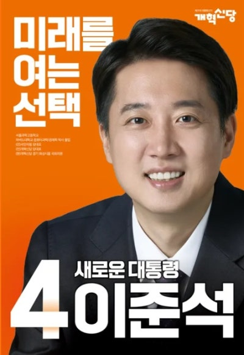

후보자 정보: 이준석 (제21대 대통령 선거)

| 소속 정당 | 개혁신당 |
|---|---|
| 생년월일 | 1985년 3월 31일 |
| 출신지 | 서울특별시 노원구 |
| 학력 | 하버드대학교 컴퓨터과학과 학사 |
| 주요 경력 |
새누리당 비상대책위원 국민의힘 당대표 대통령직인수위원회 청년특위 자문위원 제22대 국회의원(경기 화성시 을) 제21대 대통령 선거 개혁신당 후보 |
주요 공약 및 정책
✔ 정치개혁: 기득권 정당 구조 해체, 정당혁신 및 공천개혁
✔ 청년 정책: 청년창업 지원 확대, 주거비 절감 정책
✔ 교육 개혁: 디지털 교육 확대, 입시 공정성 강화
✔ 복지 제도: 효율적 복지 시스템 구축 및 청년 맞춤 복지 강화
✔ 경제: 4차 산업혁명 기반 산업 육성 및 규제 혁신
✔ 청년 정책: 청년창업 지원 확대, 주거비 절감 정책
✔ 교육 개혁: 디지털 교육 확대, 입시 공정성 강화
✔ 복지 제도: 효율적 복지 시스템 구축 및 청년 맞춤 복지 강화
✔ 경제: 4차 산업혁명 기반 산업 육성 및 규제 혁신
비전과 슬로건
슬로건: 미래를 여는 선택, 새로운 대통령
핵심 가치: 세대 교체, 공정한 경쟁, 혁신 정치
핵심 가치: 세대 교체, 공정한 경쟁, 혁신 정치
논란 및 이슈
✔ 단일화: 김문수 후보와의 단일화 거부로 인한 표 분산
✔ 경험 부족: 고위 공직 경력이 부족하다는 우려
✔ 지지도 부족 및 사표 우려: 낮은 지지도로 인한 결집력 부족
✔ 경험 부족: 고위 공직 경력이 부족하다는 우려
✔ 지지도 부족 및 사표 우려: 낮은 지지도로 인한 결집력 부족